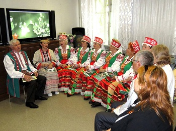

Общество «Беларусь» было основано в канун славянского праздника Ивана Купалы 26 лет назад. Начиналось все с шести человек, а уже через год вдесятеро выросшую белорусскую общину знали в городе, в немалой степени – благодаря первому вокальному коллективу «Белая Русь». Первым предателем общества «Беларусь» стала Алла Ивановна Гореликова, удостоенная Правительством Республики Беларусь медали Францикая Скорины.



Традиционная праздничная программа «Душа поёт! Гармонь играет!», посвящённая Дню славянской письменности и культуры во Дворце культуры рыбаков. Особый колорит привнёс в праздничную программу ансамбль «Натхненне» Белорусского национально-культурного общества Севастополя с песнями на родном языке.
В Культурном центре «Бухта Казачья» отметили День единения народов Беларуси и России.